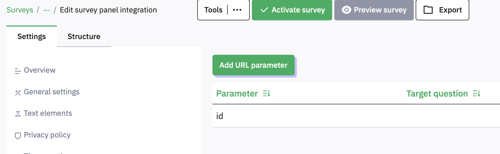

8 Redirect to another website or SONA
When a participant has finished your survey, you may want them to do something else, or grant them participation credit by returning to SONA.
If you want them to do an experiment, you might want to send them to a URL for your study, on JATOS.
Depending on the answers they have given to a question you might want to send them to different places, for example, if you have a prize draw you might have a question that asks if they want to be entered, and then send them to a separate survey to collect an email address (you should NEVER collect such personal data in your main survey). Another possibility might be that they failed an attention check, so you do not want to give them participation points.
Wherever you want them to go, the destination is set in the Settings > Text Elements option, in the End URL field. For example, this will send them to the University of Plymouth home page at the end of the survey (not very useful).
8.1 Conditional redirecting
Suppose you have a prize draw entry question and want to send them to a url http://bit.ly/prizedraw.html if they say “Yes” but to http://bit.ly/noprizedraw.html if they say “No”.
In Settings > Text Elements, find the End URL field, and enter an {if(variable==value,then-do-this, else-do-this)} statement, e.g.,

You can make complicated conditions by nesting if() statements in the then-do-this or else-do-this parts of the main if().
8.2 Using Limesurvey with SONA
If you are using the SONA participant pool, then every person who signs up to do your survey is given a unique participant ID number. You can send this to Limesurvey, then get Limesurvey to send the ID back to SONA at the end of the survey so that SONA can grant credits.
On SONA, change the Study URL so it includes &id=%SURVEY_CODE% in the URL. So if the LimeSurvey URL is:
https://psysurvey.plymouth.ac.uk/index.php?r=survey/index&sid=/651365&/lang-enthen change it to
https://psysurvey.plymouth.ac.uk/index.php?r=survey/index&sid=/651365&/lang-en
&id=%SURVEY_CODE%About URLS: when you put a ? at the end of a URL, everything that follows is a sequence of parameter names and values which the receiving web page can use. In this case, we are just sending one parameter, called id, and it takes the value %SURVEY_CODE% - this is actually replaced by SONA with the participant’s unique participant ID.
The Study Information on SONA now also displays a URL labeled “LimeSurvey End URL”.
In LimeSurvey, configure the survey to accept the id number, as URL Parameter named id. To do this, go to Settings > Survey menu > Panel Integration and click Add URL parameter . name it id and leave the target question unspecified. Remember to use lower-case as this is case-sensitive.


To return the information to SONA, you need to add an End URL. This is the ‘Limesurvey End URL’ value shown in SONA. It will be something like this one:
https://uopsop.sona-systems.com/
webstudy_credit.aspx?experiment_id=123&credit_token=4e48f9b638a&
survey_code={PASSTHRU:id}Copy it, go back to Limesurvey’s Settings > Text Elements, find the End URL field, and paste.

There is a problem here though – people who do not consent will also receive credit. To fix this we need to turn this into some evaluated code with a condition:
{if(Consent=="N", "https://uopsop.sona-systems.com/",
"https://uopsop.sona-systems.com/
webstudy_credit.aspx?experiment_id=123&credit_token=4e48f9b638a&
survey_code={PASSTHRU:id}")}This is a bunch to type, but you can just use this example and carefully paste your own experiment_id and credit_token values into it.
If you try to do this in Word, beware Word’s helpful smart quotes feature which will turn the straight quotes into curved ones, which will not work in Limesurvey.
8.3 Using Limesurvey with JATOS and OpenSesame
Sending a participant to JATOS instead of SONA is done in the same way, except that you will paste in the URL for your experiment on JATOS instead.
You can pass the participant id using the ?id={PASSTHRU:id} option.
In your OpenSesame experiment, you need to have added inline javascript as the first event to receive the parameters and copy them into JATOS variables, so that they are saved in the data file:
try{vars.participant_URL_ID =
jatos.urlQueryParameters.id}catch(e){vars.participant_URL_ID =0}At the end of your experiment, you need to send the code back to SONA (or to another survey), e.g.
try{jatos.endStudyAndRedirect("https://uopsop.sona-systems.com/
webstudy_credit.aspx?experiment_id=4221&
credit_token=84720f17f1724a69b9c23b1a1ae945d9&survey_code=" +
vars.participant_URL_ID);}catch(e){}If you are able to write OpenSesame experiments and use the JATOS server, then you can probably work out how to do this, so I am just including the info here to let you know that it is possible and it does work.